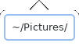
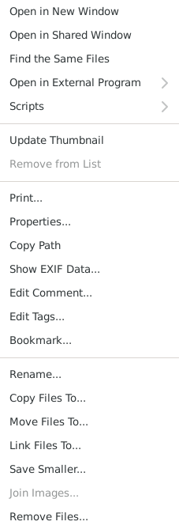
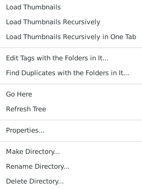
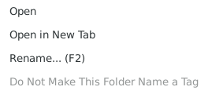
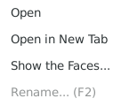
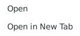
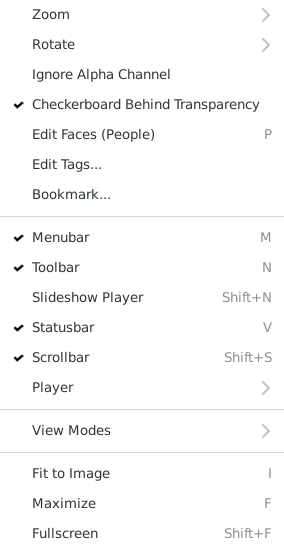

This section describes the menus shown with a mouse button (mouse menus). With the default settings they are shown by pressing the right button. The assignment can be changed on the "Mouse Buttons" pages of the preferences (section 7). For items that are also in the menu bar, see also section 4.

The mouse menu of the tabs (one tab)
Right-clicking the tabs shows the list of the tabs. It can be used to move to any tab.
It is useful when many tabs were created, for example by reading directories recursively.

The mouse menu of the thumbnail view (shown on an image file)
The mouse menu of the thumbnail view. When several files are selected, it applies to all selected images.
- Open
-
Exists only when the menu is shown on a directory or an archive. Opens the thumbnails of that directory or archive.
- Open in New Window
-
Opens the selected images, each in a new image window. When several are selected, that many image windows are created.
- Open in Shared Window
-
Opens the image in the shared image window. When there is no shared image window yet, it is created; otherwise it is reused. This command cannot be used when more than one file is selected.
- Open in External Program
-
Passes the selected files to a registered external program. For the list of external programs see 7.11.
- Scripts
-
Passes the selected files to a registered script. For the settings of scripts see 7.11.1.
- Update Thumbnail
-
Creates the thumbnails of the selected images again.
- Remove from List
-
This command works only in collection tabs.
Removes the files from the list. The files themselves are not deleted.
- Print...
-
Prints the selected images. The same as [File | Print...].
- Properties...
-
Shows the properties of the file. The permissions and the owner of the file can be changed. The name and the type can be selected and copied; long ones are shown cut (the whole in the tooltip). "Copy" next to the name puts the full path on the clipboard.
- Copy Path
-
Puts the full paths of the images selected on the clipboard (one a line).
- Show EXIF Data...
-
Exists when built with EXIF support. Shows the EXIF data of the image. Built with gexiv2 (Exiv2), the EXIF data of the formats other than JPEG (TIFF, raw files, PNG, WebP, HEIF, ...) too (without it, JPEG only, and the item is not there for the other formats).
- Edit Comment...
-
Edits the comment of the image selected (2.4).
- Open the Folder
-
Opens the folder of the image in the thumbnail window, with the image selected. Useful in tabs with images of many folders (the results of the index or of a search).
- Find the Same Files
-
Looks for the same files as the images selected among all the indexed images and opens the result window of the duplicates (Find Duplicates in the Index).
- Edit Tags...
-
Only with the image index. Edits the tags of the images selected (2.6).
- Bookmark...
-
Bookmarks the selected images and shows a field for a note (2.5).
- Rename... / File Names to UTF-8... / Copy Files To... / Move Files To... / Link Files To... / Remove Files...
-
The same as the items of the [Edit] menu.
- Save Smaller...
-
Saves the selected images smaller, as new files. The original files are not changed. Useful to make photos take less space.
You can choose which of the height, the width or the longer side to keep at or below how many pixels (800 px of the height by default), the quality of JPEG and WebP, and what to add to the names ("_resized" by default: big_resized.jpg for big.jpg, in the same folder). When a file of the same name is already there, -1, -2, ... is added to the name; nothing is overwritten. The EXIF orientation is applied to the pixels.
You can also choose whether to keep the shooting information (EXIF etc.), whether to leave out the location (GPS) then, and whether to copy the comments and tags. Images already smaller than the size are copied as they are. Images in formats gdk-pixbuf cannot write are saved as JPEG.
The size and the file size of the first image after saving are estimated in the dialog. Saving runs in the background, so you can keep working; [Stop] stops the rest. When it is done, [Show the Saved Image] chooses the image saved.
- Join Images...
-
Joins the two or more selected images into one, saved as a new file. The images are not changed.
Images: the order they are joined in; ↑ ↓ move the image chosen.
Arrange: one below another, side by side, in a grid (with the number of columns).
Size: the width (the height side by side) made the one of the smallest, of the largest, or not changed (then centered, white around).
Look for overlaps: for the pieces of one photo that overlap where they meet, the end of an image and the start of the next most alike are found and put over each other (a little different JPEG too). A plain part (white) is not taken as an overlap.
Seam, Overlap: the overlap (px) of each seam can be put right with the slider or the number; "Seam" chooses which (1 and 2, 2 and 3, ...). Beside it, (found: n px) is the overlap found, or (none found).
How the seam is shown: in the whole image above, the seams are red dashed lines (the one chosen darker). Below, the seam chosen is shown near its own size: one below another, the end of the image before above and the start of the next below. Two pairs of red triangles at the sides: the first (upper, left) is where the next image begins, the second (lower, right) where the one before ends; between them they overlap (one pair with no overlap). The next image is shown from the first pair on, so they match when the picture goes on there without a step.
As the difference: the band where they overlap (between the triangles) is shown as the difference of the two images: black when they match, the outlines of things bright when they do not. Changing the number one by one to find where the band is darkest is the easy way to match them.
When no overlap is found: where they overlap only in a plain part (a sky, a white background), it may not be found (it looks the same anywhere). Then put the overlap in by hand, by something seen in both images (an edge, letters).
The quality (JPEG, WebP; 90 by default), keeping the information (EXIF, ...) of the first file, copying the comment and the tags given by hand of the first one.
Saved next to the first image as "name_join.jpg" (in its format; JPEG when gdk-pixbuf cannot write it, PNG for the formats of gimv's own loaders, MAG, Pi, ...), never over another file (-1, -2, ... is added). The EXIF orientation is applied first. MAG, Pi and the like can be joined too (as they are shown: stretched to the shape of the pixels of their machine). Saved as PNG, the comments written in the files (the comment, the user name of MAG, ...) go into the comment of the PNG (under the name of each file when they differ), and with [Keep the information of the first file] the date of the newest file as EXIF DateTime (MAG, Pi and the like have no EXIF; the date tab of the index then shows it there). The images are read, the overlaps found and the image saved in threads. [Show the Saved Image] then chooses it in the thumbnail window.
Besides the tab of the directories, the directory view has the Date, Tag and People tabs of the image index (2.6, 2.7) and the Bookmarks tab (2.5), chosen with the icons at its top. Each has its own right button menu.

Right button menu of the directory tab
Only one directory can be selected in the directory view, so the commands always apply to the directory under the mouse cursor.
- Load Thumbnails
-
Reads the directory under the cursor and shows it in the thumbnail view. The first time, a new tab is created; when it was already read, its tab becomes active.
- Load Thumbnails Recursively
-
Reads the directory under the cursor and everything below it. A tab is created for each directory.
- Load Thumbnails Recursively in One Tab
-
Reads the directory under the cursor and everything below it, and shows all images in one tab.
- Edit Tags with the Folders in It...
-
Edits the tags of all the images in the directory under the cursor and in the directories below it (2).
- Find Duplicates with the Folders in It...
-
Looks for the images in the directory under the cursor and in the directories below it that have the same files, also in other folders (Find Duplicates in the Index).
- Go Here
-
Makes the directory under the cursor the top of the directory view.
- Bookmark...
-
Bookmarks the directory under the cursor, with a field for a note. It is opened from "Folders and Archives" of the Bookmarks tab (2.5).
- Refresh Tree
-
Refreshes the directory view. Used to show directories created, moved or deleted from the command line.
- Properties...
-
Shows the properties of the directory. The permissions and the owner can be changed.
- Make Directory...
-
Creates a new directory in the directory under the cursor.
- Rename Directory...
-
Renames the directory under the cursor.
- Delete Directory...
-
Deletes the directory under the cursor after a confirmation dialog.

Right button menu of the Date tab
- Open
Shows the images of the row (a year, a month, a day) in the result tab of the thumbnail view, as a click on the row (right of the arrow) (2.6).
- Open in New Tab
Shows them in a new tab instead of the result tab. A click with the middle button does the same.

Right button menu of the Tag tab
- Open, Open in New Tab
As in the Date tab (6.3.2).
- Rename... (F2)
Renames a tag added by hand (2.6); not the tags the index makes (folders, cameras, shapes, ...).
- Do Not Make This Folder Name a Tag
On the automatic tag of a folder name: adds the folder name to "Folder Names Not Made Tags" of [Preferences | Index | Automatic Tags], and the tag goes (2.6). Not while the preferences window is open.

Right button menu of the People tab
- Open, Open in New Tab
As in the Date tab (6.3.2).
- Show the Faces...
Opens the faces of the person (or of the unnamed group, of the name guessed) in the faces window, where they can be named or a wrong face taken out (2.7).
- Rename... (F2)
Renames a tag of people (2.7); the names of the people are changed in the faces window.

Right button menu of the Bookmarks tab
- Open, Open in New Tab
Show the bookmarked images of the row (all, a month, with a note, without a note), as in the Date tab (6.3.2). A row under "Folders and Archives" opens the folder or archive in a tab of its own (the tab of it when it is open).
The mouse menu of the preview has Zoom, Rotate, Ignore Alpha Channel, Checkerboard Behind Transparency, Movie, Two Pages, View Modes, Show Scrollbar [Shift + S], Create Thumbnail [Shift + T], Memory Buffer [Ctrl + B], Save Image As... and Print.... Each item is the same as the item in the menus of the image window (4.1 to 4.3, 4.8).

The mouse menu of the image view in the image window
The mouse menu of the image view in the image window is the same as the [View] menu of the image window (4.3).
The GTK 4 port adds these items (also in the right button menu of the preview):
Rotate - Flip Horizontally (X) : turns the image over left and right; remembered for each image, as the rotation.
Copy the Image to the Clipboard (Shift+Ctrl+C) : copies the image shown to the clipboard.
Crop Image... (C) : crops the image shown and saves the part as a new file (4.2).
Edit Faces (People) (P) : opens the faces panel, to name the faces in the image (2.7). Only with face recognition.
Open the Folder : opens the folder of the image in the thumbnail window.
Edit Tags... : edits the tags of the image shown (2.6). Only with the image index.
Bookmark... : bookmarks the image shown (2.5).